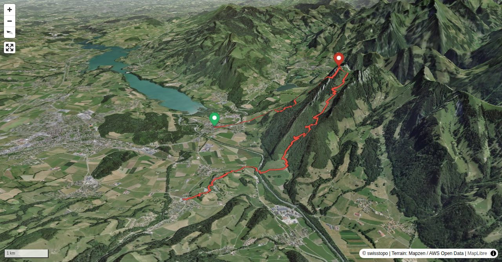

Granted, if you want to get from Broc (chocolate factory) to Gruyères (picturesque medieval town) it is not necessary to climb Dent de Broc, but definitely more interesting.
Daniel Anker is a Bernese author and photographer. The historian has written around 40 ski tour, hiking, via ferrata and mountain bike guide books as well as detailed monographs on individual peaks in Switzerland.
Quick Facts
| Summit elevation | 1813 m |
|---|---|
| Difficulty | SAC T4 Alpine hiking with exposure, rougher terrain, and sections that are not suitable for beginners. Guide |
| Trailhead | Broc, station |
| Distance | 12.7 km (out-and-back) |
| Total ascent | ~1199 m |
| Elevation range | 699-1813 m |
| Route sources | SAC Route Portal |
Photos


Route Map & Elevation
i
i
sac_scale (precise T1–T6) with
swissTLM3D Wanderwegart
fallback where OSM is silent (coarser T2/T3 and T4+ buckets).
Coverage: OSM 44.8% · swisstopo 50.7% · unknown 3.3%.Elevations computed from the inlined GPX track (SwissTopo height API).
Loading forecast…
3D Terrain View

Route Details
Broc – Dent de Broc – Gruyères
- Total hiking time: 6¼ h Broc – Les Plains – Dent de Broc: 3½ h Dent de Broc – Le Châtelet – Gruyères: 2¾ h
Terrain & safety
The exposed summit ridge is T4, the rest T2. The trails are only partially marked. The last stretch requires surefootedness and being comfortable with heights.
Source: SAC Route Portal
Getting There & Back
Start: Broc, station (719 m)
Directions from to Broc, station
End: Gruyères, station (746 m)
Directions from Gruyères, station back to
Field Reference
| Trailhead | Broc, station | 46.60410, 7.09880 |
|---|---|---|
| Summit | Dent De Broc (1813 m) | 46.58855, 7.12779 |
Coordinates are WGS84 decimal degrees (lat, lon). Emergency: 112 (general) or 1414 (Rega air rescue). Page URL: